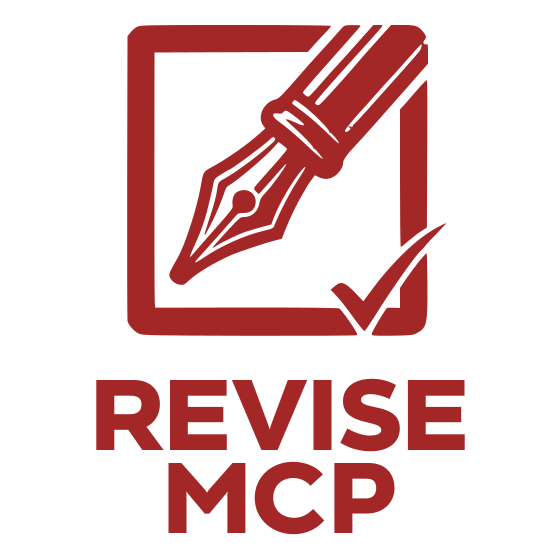

Revise MCP is an MCP (Model Context Protocol) server that provides tools to revise and refactor code. Its tools are designed for AI agents, using text-based inputs rather than line numbers or character offsets.
AI agents struggle with coordinate-based tool interfaces that require precise line and character positions. Standard editor tools want 0-indexed line numbers, character offsets within lines, and precise cursor positioning. AI agents cannot reliably count characters and frequently make off-by-one errors. They work much better with text-based interfaces that match content rather than coordinates.
Similarly, standard editor tools for moving or indenting code require the agent to restate the entire block of code character-for-character in a parameter — the equivalent of a human retyping a class definition from scratch. This is high-effort, error-prone, and scales poorly with block size.
Revise MCP provides tools that accept substring fragments instead
of coordinates, using a ⬥ marker to identify precise boundary points
within matched context.
| Tool | What it does |
|---|---|
move_string_in_file |
Moves a contiguous range of lines from one location to another within a file (or between files) |
indent_dedent |
Indents or unindents a contiguous range of lines by a specified number of levels |
outline_file |
Returns a high-level outline of a Python file, similar to VS Code’s folded view |
rename_symbol (optional) |
Renames a symbol and all its references across the workspace using VS Code’s LSP-backed rename |
Each tool uses substring matching with a ⬥ marker to identify
boundaries — no line counting or coordinate math required.
See the README for full parameter documentation and examples.
python3 -m pip install pipxpipx install revise-mcp
which revise
# /Users/YOUR_USERNAME/.local/bin/revise
Add to your VS Code MCP settings:
{
"servers": {
"revise": {
"type": "stdio",
"command": "/Users/YOUR_USERNAME/.local/bin/revise",
"args": []
}
}
}
Run once to register Revise MCP for all your projects:
claude mcp add --scope user revise -- /Users/YOUR_USERNAME/.local/bin/revise